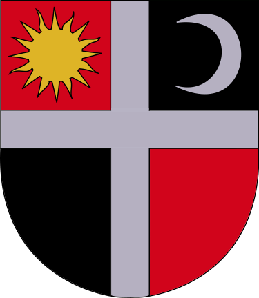

"In the Cuman bishopric – as we were informed – is living a people called Vallah and others, Hungarians and Germans as well, who came here from the Hungarian Kingdom."
"On the day of the 10th of April, Despot Vodă left Hîrlău (Horlo) to Tîrgul Frumos (Zeplak = Széplak) finally on the 12th to the fortress of Roman (Románváros)" Despot Vodă ordered me to write these: Alexandru Moldoveanul forced all the nations, with no exceptions, to be baptized again and to follow the religion of the Moldavians, taking them away from their own religion, he appointed a bishop of the Saxons and the Hungarians, to rebuild the confiscated churches and to strengthen their souls in their beliefs, and his name is Ian Lusenius, and is Polish."
"Despot was unyielding in punishment, especially against the ones who don't respect the sanctity of marriage, -according to the habit of those people-: this habit was copied by the Hungarians and Saxons living here, in this country (Moldavia). He started to build a school in Cotnari, which is mostly inhabited by Hungarians and Saxons."
"These Franciscans are very few and they speak neither German, nor Hungarian, so they can't take spiritual care of these Catholics, 15000 in number."
"In the whole region in 15 towns and in all the neighborhood villages there are Hungarians and Saxons, but most of them don't know how to read, don't even recognize the letters."
Munich Codex: Hussite translation of the New Testament to Hungarian dated in the text in 1466 in Moldavia Hungarian edition (text original Old Hungarian with modernized script, foreword, introduction in modern Hungarian, dictionary in German and Hungarian).
For centuries, the self-identity of the Csángós was based on the Roman Catholic religion and the Hungarian language spoken in the family. It is generally accepted by serious scholars (Hungarian but also Romanian) that the Csángós have a Hungarian origin, and that they arrived in Moldavia from the west. Some Romanian authors claim that the Csángós are in fact "Magyarised" Romanians from Transylvania. This theory has also to be dismissed; it is not conceivable that these "Romanians" could persist in using a "foreign" language after centuries of living in Romania surrounded by Romanians speaking Romanian. Whatever can be argued about the language of the Csángós there is no doubt that this is a form of Hungarian.– Csango minority culture in Romania, Doc. 9078 from 4 May 2001.
The Council of Europe has expressed its concerns about the situation of the Csángó minority culture, and discussed that the Csángós speak an early form of Hungarian and are associated with ancient traditions, and a great diversity of folk art and culture, which is of exceptional value for Europe. The council also mentioned that (although not everybody agrees on this number) it is thought that between 60,000 and 70,000 people speak the Csángó Hungarian dialect. It has also expressed concerns that despite the provisions of the Romanian law on education, and repeated requests from parents there is no teaching of the Csángó language in the Csángó villages, and, as a consequence, very few Csángós are able to write in their mother tongue. The document also discussed that the Csángós make no political demands, but merely want to be recognized as a distinct culture and demand education and church services in the Csángó dialect.
At the time of this report's release, the Vatican expressed hope that the Csángós would be able to celebrate Catholic masses in their liturgical language, Csángó.
The situation of the Csángó community may be understood by taking into consideration the results of the 2002 census. 1,370 persons declared themselves Csángó. Most of them live in Bacău County, Romania, and belong to the Roman Catholic Church. During the last years, some statements identified all Catholics in Bacău County (119,618 persons according to 2002 census) as Csángó. This identification is rejected by most of them, who did identify themselves as Romanians.
The name Csángó appeared relatively recently, being used for the first time, in 1780 by Péter Zöld. The name Csángó is used to describe two different ethnic groups:
- Those concentrated in the county of Bacău (the southern group) and in the area surrounding the city of Roman (the northern group). We know for certain that these people are not Szeklers. They are Romanian in appearance, and the majority of them speak a Transylvanian dialect of Romanian and live according to Romanian traditions and customs. These characteristics suggest that they are Romanians from Transylvania who have joined the Romanian Catholic population of Moldavia.
- Those of Szekler origin, most of whom settled in the valleys of the Trotuş and the Tazlău and, to a lesser extent, of the Siret. Their mother tongue is the same as that spoken by the Szeklers, and they live side by side with Romanians.
Their music shows the characteristic features of Hungarian music and the words of their songs are mostly Hungarian, with some dialect differences.
The anthem of the Csángós[clarification needed refers to Csángó Hungarians multiple times.
The Csángós did not take part in the language reforms of the Age of Enlightenment, or the bourgeois transformation that created the modern consciousness of nationhood (cf. Halász 1992, Kósa 1998). They did not have a noble stratum or intelligentsia (cf. Kósa 1981) that could have fashioned their consciousness as Hungarians (Halász 1992: 11). They were "saved" (Kósa 1998: 339) from "assimilation" with the Romanians by virtue of their Roman Catholic religion, which distinguished them from the majority Greek Orthodox society.
Official Romanian censuses in Moldavia indicate the following:
| Year | Hungarians in Moldavia |
|---|---|
| 1859 | 37,825 |
| 1899 | 24,276 |
| 1930 | 23,894 |
| 1992 | 3,098 |